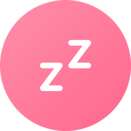

Round clip mocks the GT 6 Pro display. Time on left, day-grid (7 dots) on right.
Green dot = enabled, grey ring = disabled. Non-recurring shows text ("Once" / "Timer").
Day order Monday-first (M T W T F S S) per user pref (task #68 will make this configurable).
Privacy consent (first launch)
Privacy
No accounts, no ads, no tracking. Your alarms stay on your devices and sync only to your paired watch.
QR (native)
Scan for the full policy
Decline
Agree
Index — never connected (onboarding QR)
Set up GT Wake
Install GT Wake on your phone to add alarms
QR (native)
Scan to get the phone app
Index — empty, connected (no alarms + QR)
No alarms
Add alarms on the phone
QR (native)
Scan to get the phone app
First paint — not ready (dark splash, anti-flicker gate)
Index — 1 alarm (recurring)
GT Alarm · 0.1.0
rx:ok@8s raw:3 in:3 alarm_added@8s
st:1 on:1 Synced 12 min ago b:single-page/05-18
07:30
M
T
W
T
F
S
S
Index — list w/ background photo (nested-stack, no scrim)
GT Alarm · 0.1.0
rx:ok@4s raw:5 in:5 alarm_added@4s
st:1 on:1 Synced 2 min ago b:bg-nest/05-18
bg:internal://app/watch_bg_png_full.png
07:30
M
T
W
T
F
S
S
Ring — w/ background photo (full, no scrim)
Alarm
07:30

Index — many alarms
GT Alarm · 0.1.0
rx:ok@2s raw:9 in:8 sync_replace@2s
st:3 on:2 Synced 1 min ago b:single-page/05-18
06:45
M
T
W
T
F
S
S
09:00
Timer
22:00
M
T
W
T
F
S
S
Syncing page (wake-by-sync)
Syncing alarms
…
rx #3: sync_replace
rx:ok@1s raw:4 in:3 last:sync_replace@1s
tx:sync_hash=207 pg:syncing
Ring page
Alarm
07:30
snt:207 rx:ok@1s raw:2 in:1
Ring page — ended (green, DISMISSED replaces buttons)